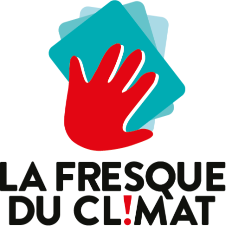
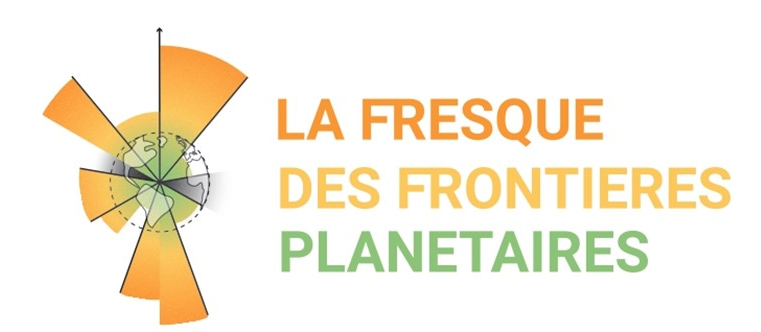
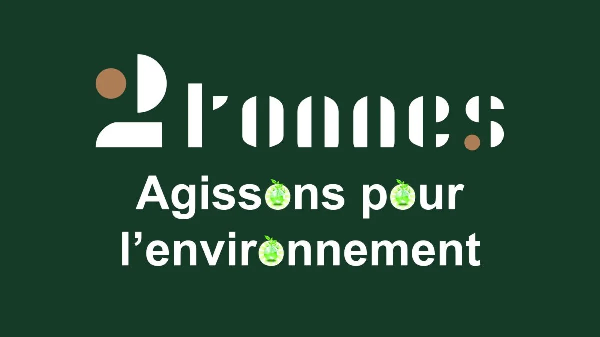
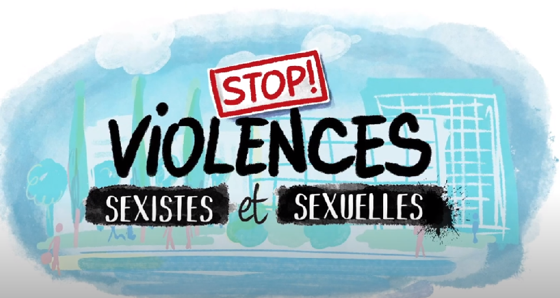

La Fresque du Climat
Cette activité aura été ma première prise de conscience sur les enjeux climatiques
me permettant de découvrir à quel point chacune de nos actions a un impact
Indirecte/directe sur les enjeux climatiques.

La Fresque des Frontière Planètaire
Cette activité m'a permis de visualiser les frontières planétaires qui ont été dépassées
comme celles qui ne sont pas encore dépassées mais j'ai aussi vu qu'il était possible de faire marche arrière
et de réparer certaines frontières, comme avec le trou dans la couche d'ozone.

2 Tonnes
L'activité 2 tonnes aura été une véritable révélation pour moi, elle m'a permis de prendre pleinement
Conscience des problèmes liés à l'environnement et de commencer à prendre des actions concrètes.
Suite à cette activité j'ai réalisé que le domaine où je polluais le plus était l'alimentation,
donc j'ai limité ma consommation de viande à 4 fois par semaine.

Formation Violence Sexuel et Sexiste
J'ai suivi au sein de l'INP une formation antiviolence sexuelle et sexiste, me permettant de pouvoir rediriger
les victimes de VSS. J'y ai aussi appris la distinction des différentes violences existantes, qu'elles soient sexistes ou
discriminatoire.